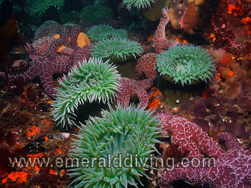
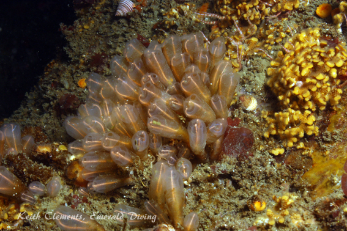
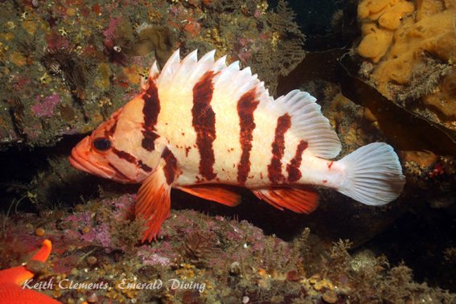
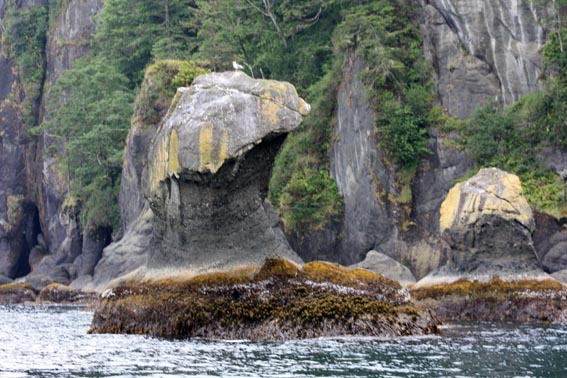
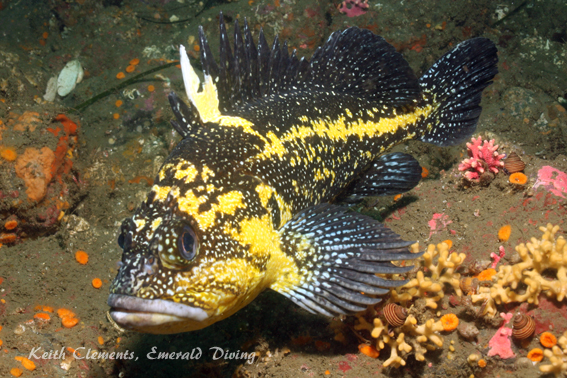
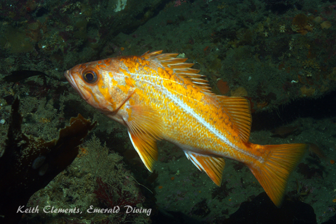
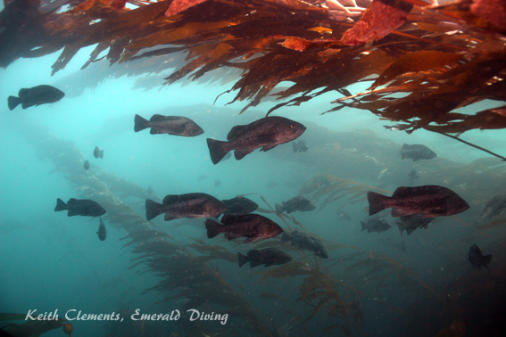
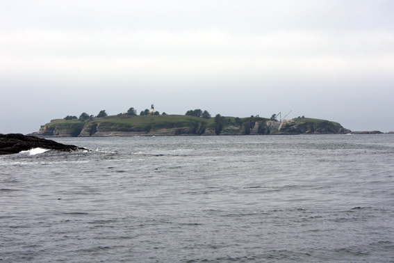
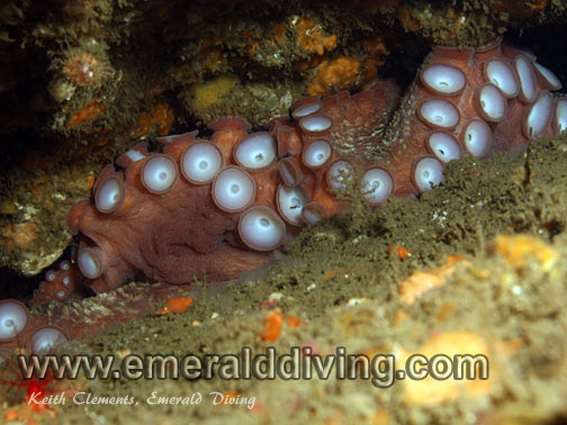
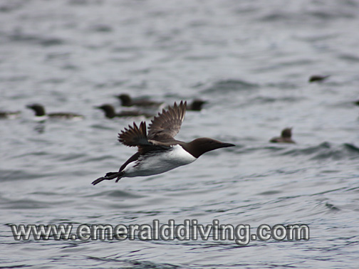

©2010 Emerald Diving, All Rights Reserved
Dive Reports
Emerald Diving
Explore the coastal and inland waters of
Washington and BC
Explore the coastal and inland waters of
Washington and BC
Emerald Diving
Explore the coastal and inland waters of
Washington and BC
Explore the coastal and inland waters of
Washington and BC
Emerald Diving
Explore the coastal and inland waters of
Washington and BC
Explore the coastal and inland waters of
Washington and BC


Even the ordinary is extraordinary
Neah Bay
07.17.10 - 07.18.10
07.17.10 - 07.18.10

The unique underwater geography of Cape Flattery produces incredibly diverse, robust, and colorful marine life. Ochre stars share a shallow rocky crevice with green surf anemones on the south side of Tattosh Island.



Destinctive Mushroom Rock from the topside. Although there is a nice wall immediately off the rock, the real interesting structure starts about 30 yards to the west.

The protected canary rockfish.
This was a quick-hitter weekend. Our Neah Bay trips are normally three day events, but we cut this trip back to a standard weekend this time. Driving out to Neah Bay while towing a boat is a big investment for five or six dives, but Neah calls to me each year - a call I must answer.
Joining me on this two-day diving excursion was Margaret and Neah Bay newbie but accomplished diver, Jim Fillis. We headed out Friday afternoon with the best intentions of making it to Sekiu by 8:00 PM and getting a night dive in at Sekiu. However, traffic and a stop for dinner demolished that plan and we ended up arriving after 9 PM. No night dive on arrival!
The next morning we got up and headed out at a reasonable hour. We were greeted by overcast skies - but no fog. A rather noticeable swell was evident as we rounded Waadah Island. By the time we got to Mushroom Rock, the swell had built to a substantial size - about 6 feet. With the pervasive swell, we decided that semi-sheltered Mushroom Rock would be a good warm-up dive, so Margie and Jim suited up. While underwater, Mother Nature almost magically reduced the swell by about half of what it was, which was very well appreciated. Once the first dive team surfaced and was back on board, I kept to my tradition by starting my diving adventure at Mushroom Rock. Vis was a respectable 30+ feet, but was really notable was the water was warm - a balmy 48 degrees. I am used to temps of about 45 degrees at this time of year. This trend continued throughout the trip - water temps were as cold as 46 degrees in the Strait, but as high as 52 degrees on the north side of Tatoosh Island.
Joining me on this two-day diving excursion was Margaret and Neah Bay newbie but accomplished diver, Jim Fillis. We headed out Friday afternoon with the best intentions of making it to Sekiu by 8:00 PM and getting a night dive in at Sekiu. However, traffic and a stop for dinner demolished that plan and we ended up arriving after 9 PM. No night dive on arrival!
The next morning we got up and headed out at a reasonable hour. We were greeted by overcast skies - but no fog. A rather noticeable swell was evident as we rounded Waadah Island. By the time we got to Mushroom Rock, the swell had built to a substantial size - about 6 feet. With the pervasive swell, we decided that semi-sheltered Mushroom Rock would be a good warm-up dive, so Margie and Jim suited up. While underwater, Mother Nature almost magically reduced the swell by about half of what it was, which was very well appreciated. Once the first dive team surfaced and was back on board, I kept to my tradition by starting my diving adventure at Mushroom Rock. Vis was a respectable 30+ feet, but was really notable was the water was warm - a balmy 48 degrees. I am used to temps of about 45 degrees at this time of year. This trend continued throughout the trip - water temps were as cold as 46 degrees in the Strait, but as high as 52 degrees on the north side of Tatoosh Island.

Mushroom also set the tone for the rest of the diving: Very nice, relaxed, and easy. Nothing out of the ordinary, but plenty of good marine life to keep me occupied. Most noticeable were small colonies of lightbulb tunicates, one shy giant Pacific octopus, and a distinct lack of sea-nettle jellies that invaded this area in heavy concentrations the last two years prior in July.
After Margie and Jim completed a dive at Stellar Rock with little interest from the sea lions, I opted for a dive on the south side of Tatoosh Island in the canyon. I truly love this dive when vis is good, which was the case on this day. I made it out past the canyon to the wall facing west and followed it down to about 100 feet. I usually find octopus and wolf-eel on this wall, but not this time. However, the area was teaming with rockfish which kept me company on the dive. The invertebrate life is also second to none at this site, however there was no sign of the mass Dungeness crab molting event that I have witnessed during prior Neah Bay dive trips in July. I ended the dive exploring one of the large caves in the south bay of Tatoosh Island. Again, a very nice dive. I noted as I surfaced that the wind had picked up something fierce from the south - blowing a good 20 knots. I was picked up by bobbing boat and we scurried back to the shelter of the Strait to end the day's diving.
Margie decided to sit the last dive of the day out, so Jim and I jumped in at another of my favorite sites, Third Beach Pinnacle. The kelp was up in mass, which means little current. We headed west along the reef in search of the resident rosy rockfish, but we hit our turn time before we made it to the outcropping they inhabit. We did find several wolf-eels taking sanctuary in a few of seemingly unlimited number of den sites along this ridge.
After Margie and Jim completed a dive at Stellar Rock with little interest from the sea lions, I opted for a dive on the south side of Tatoosh Island in the canyon. I truly love this dive when vis is good, which was the case on this day. I made it out past the canyon to the wall facing west and followed it down to about 100 feet. I usually find octopus and wolf-eel on this wall, but not this time. However, the area was teaming with rockfish which kept me company on the dive. The invertebrate life is also second to none at this site, however there was no sign of the mass Dungeness crab molting event that I have witnessed during prior Neah Bay dive trips in July. I ended the dive exploring one of the large caves in the south bay of Tatoosh Island. Again, a very nice dive. I noted as I surfaced that the wind had picked up something fierce from the south - blowing a good 20 knots. I was picked up by bobbing boat and we scurried back to the shelter of the Strait to end the day's diving.
Margie decided to sit the last dive of the day out, so Jim and I jumped in at another of my favorite sites, Third Beach Pinnacle. The kelp was up in mass, which means little current. We headed west along the reef in search of the resident rosy rockfish, but we hit our turn time before we made it to the outcropping they inhabit. We did find several wolf-eels taking sanctuary in a few of seemingly unlimited number of den sites along this ridge.
Lightbulb tunicates amongst the rocky structure at Mushroom Rock
One of the Neah Bay inhabitants that Washington divers rarely get to see elsewhere in Washington State, the blue rockfish. Heavy masking on the face and a more consistently colored body help differentiate the blue from the black rockfish, although they often school together.
That evening, I got in my shore dive at Sekiu. Another nice dive, but nothing extraordinary. The swell was moderate and vis was 15-20 feet. I noted a complete absence of some of the traditional inhabitants I expect to find here this time of year in this area - namely silver spotted sculpins and red-eye jellies. However the sand lances were busy in the shallows along the gravelly shoreline.
The next morning found me back at Third Beach Pinnacle. The kelp was up when we arrived, but disappearing fast. I entered quickly and started my quest for the rosy rockfish. This time I made it to their outcropping, but could not find either of the two bright orange residents that I have found here the last 8 years. Better luck next year. Plenty of tiger rockfish, juvenile yelloweye rockfish, and beautiful nudibranchs kept my attention on the return trip to the entry point. When I got back to the entry, I found the current in full tilt and the kelp pinned to the top of the reef. I hung just below the top of the wall with a curious school of black and blue rockfish to serve my safety stop.
We then headed for the cape where Margie and Jim had a fantastic dive at Slant Rock right at slack. I ended my dive itinerary by jumping in at Stellar Rock with hopes that some of the females would get curious and join me, which they used to do. I did get a couple of nice fly-bys by big males, but the sea lions seemed almost indifferent to our presence now. I ended up exploring some spectacular channels cut through the rock to the south of Stellar Rock. In sections of these channels, the invertebrate population would just explode - in density, variety, and color. I also counted seven cabezon on this dive, which was good to see as cabezon can be somewhat sparce. Margie and Jim ended with a second dive at Mushroom Rock.
The next morning found me back at Third Beach Pinnacle. The kelp was up when we arrived, but disappearing fast. I entered quickly and started my quest for the rosy rockfish. This time I made it to their outcropping, but could not find either of the two bright orange residents that I have found here the last 8 years. Better luck next year. Plenty of tiger rockfish, juvenile yelloweye rockfish, and beautiful nudibranchs kept my attention on the return trip to the entry point. When I got back to the entry, I found the current in full tilt and the kelp pinned to the top of the reef. I hung just below the top of the wall with a curious school of black and blue rockfish to serve my safety stop.
We then headed for the cape where Margie and Jim had a fantastic dive at Slant Rock right at slack. I ended my dive itinerary by jumping in at Stellar Rock with hopes that some of the females would get curious and join me, which they used to do. I did get a couple of nice fly-bys by big males, but the sea lions seemed almost indifferent to our presence now. I ended up exploring some spectacular channels cut through the rock to the south of Stellar Rock. In sections of these channels, the invertebrate population would just explode - in density, variety, and color. I also counted seven cabezon on this dive, which was good to see as cabezon can be somewhat sparce. Margie and Jim ended with a second dive at Mushroom Rock.

Overall, this was a very nice trip. The diving was good, the vis was decent (25-35 feet), we had no fog, light current, relatively moderate swell, and the winds stayed within check most of the time. The marine life was good, but we saw nothing truly spectacular this time - most trips seem to have something very memorable. Last year, we had whales in close, elephant seals, and even a halibut. But even with that, every dive at Neah Bay day is still quite extraordinary.
This two day trip certainly did not burn me out the way the three days trips typically do. It is sometimes hard on that third day to find the energy to drive out to Neah from Sekiu for a couple of dives, knowing there is a 6 hour drive home followed by two hours of cleaning gear and a boat. Sunday found me leaving Neah Bay much more energetic and anxious to come back next year when Neah calls to me again.
This two day trip certainly did not burn me out the way the three days trips typically do. It is sometimes hard on that third day to find the energy to drive out to Neah from Sekiu for a couple of dives, knowing there is a 6 hour drive home followed by two hours of cleaning gear and a boat. Sunday found me leaving Neah Bay much more energetic and anxious to come back next year when Neah calls to me again.



Tiger rockfish on patrol at Third Beach Pinnacle
Stellar sealions spar just off Tatoosh Island.
Grey puffball sponge
China rockfish


Above: A shy giant Pacific octopus at Mushroom Rock shows off its rows of suckers.
Right: A Tatoosh Island as seen from the Cape. On this day, the swell subsided, giving us great diving conditions.

Left: Black Rockfish hang in the kelp at Third Beach Pinnacle
Huge rafts of common murres on the south side of Tatoosh Island.